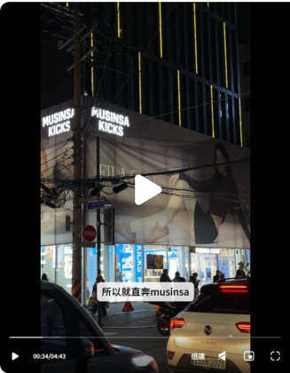
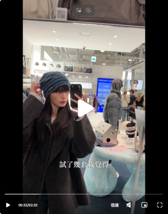
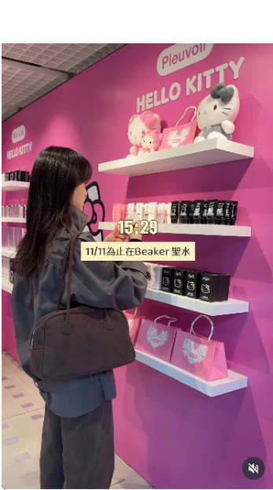
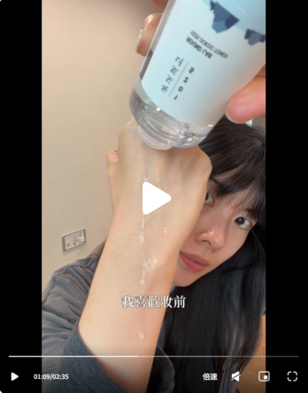
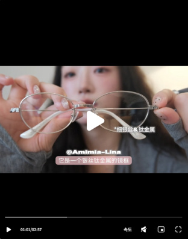
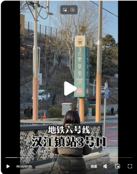
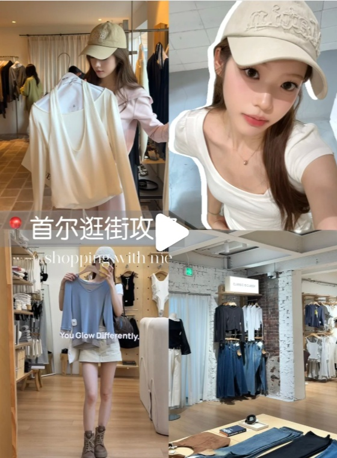
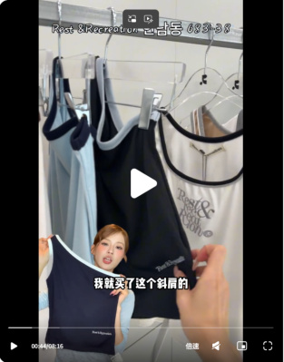
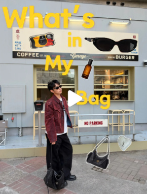
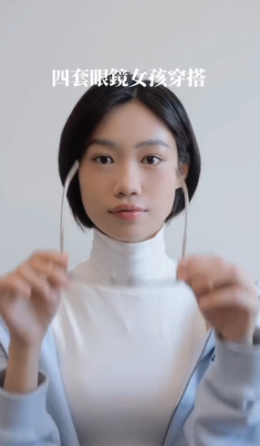

영상 콘텐츠
협업 혜택안경 1개 + 선글라스 1개합계 ₩130,000 이하
- 영상 1편당 40초 이상
- VLOG 또는 모음형 콘텐츠는 썸네일, 오프닝 예고 및 영상 시작 후 30초 이내 브랜드와 상품을 노출해야 합니다.
- 자막 및 음성 설명 필수
본 가이드는 VIEWMAP 공식 협업 촬영 가이드로, 브랜드 협업, 매장 체험 및 KOC/KOL 홍보 콘텐츠 제작에 적용됩니다.
영상 콘텐츠 / 이미지 콘텐츠 (택 1)
해당 촬영 형태를 선택해 주세요. 나머지 항목은 두 형태에 공통 적용됩니다.
브랜드명: VIEWMAP
브랜드 철학: High-End for All
제품 종류: 안경 / 선글라스
매장명: VIEWMAP 성수 플래그십 스토어 / VIEWMAP TITAN SEONGSU
매장 주소: 서울특별시 성동구 성수일로 42
교통: 지하철 2호선 뚝섬역 5번 출구
다음은 VIEWMAP의 핵심 상품 강점으로, 모든 협업 매장 및 콘텐츠 제작 방향에 공통 적용됩니다. 영상과 이미지 콘텐츠 모두 아래 정보를 명확히 전달해야 합니다.
VIEWMAP 매장에서 판매하는 모든 메탈 프레임 제품은 프론트(Front)부터 템플(Temple)까지 티타늄 소재를 사용하여 가볍고 내구성이 뛰어나며 편안한 착용감을 제공합니다. 프레임과 템플 및 제품 디테일을 클로즈업하여 소재와 디자인의 특징을 직관적으로 전달하는 것을 권장합니다.
VIEWMAP은 4~6만 원대 티타늄 안경을 제공하며 디자인, 소재, 품질과 가격 경쟁력을 갖추어 합리적인 가격으로 티타늄 안경을 구매할 수 있습니다.
영상 콘텐츠: 음성 설명 또는 자막으로 위 두 가지 핵심 정보를 전달해야 합니다.
이미지 콘텐츠: 게시물 본문에 명확히 설명하고 제품 디테일 이미지를 함께 첨부하는 것을 권장합니다.
크리에이터의 스타일과 콘텐츠 맥락에 맞게 표현을 조정할 수 있으나 위 핵심 홍보 정보는 생략할 수 없습니다.
실제 협업 매장 및 이벤트 기간에 맞는 홍보 주제를 선택합니다.
브랜드 이미지, 매장 공간 및 안경 착용 체험을 중심으로 VIEWMAP 브랜드명, 성수 플래그십 스토어 위치, 매장 특징 및 실제 착용 장면을 명확하게 보여주세요.
성수 쇼핑, 한국 여행 및 패션 스타일링과 연계하여 지속적인 매장 노출과 방문 의향을 높이는 것을 권장합니다.
1주년 한정 혜택, 인기 안경 및 매장 체험을 중심으로 홍보합니다.
VIEWMAP 성수 플래그십 스토어 1주년 이벤트
지정 상품 최대 30% 할인
이벤트 기간: 2026년 12월 31일까지
2층 상품에 한함
OPEN RUN 시간대 할인
매일 10:00~13:00, 대상 상품 ₩10,000 할인
이벤트 기간: 2026년 12월 31일까지
일부 상품에 한함, 2층 상품 제외
신규 매장 오픈, 매장 공간, 안경 착용 및 주변 쇼핑 동선을 중심으로 신규 매장명, 위치, 교통편, 매장 특징 및 실제 방문 경험을 포함해야 합니다. 오픈 한정 할인, 사은품 또는 추첨 이벤트가 있는 경우 브랜드에서 제공하는 정보를 바탕으로 홍보해 주세요.
지역 쇼핑 가이드, 상권 소개 및 신규 매장 방문 콘텐츠와 연계하여 노출과 방문 의향을 높이는 것을 권장합니다.
계정의 방향성과 콘텐츠 스타일에 맞춰 다음 다섯 가지 중 하나를 선택합니다.
모든 제작 방향은 브랜드 핵심 홍보 포인트 및 필수 준수 사항을 따라야 합니다.
자연스러운 일상 기록 속에서 VIEWMAP을 주요 방문 장소로 소개하고 실제 쇼핑 및 착용 과정을 통해
VIEWMAP은 영상의 첫 번째 주요 방문 매장으로 배치하고 시작 후 30초 이내 브랜드 소개를 시작합니다.
VIEWMAP 관련 분량은 40초 이상으로 충분한 브랜드 및 상품 노출 시간을 확보합니다.
영상 시작 3~5초에 안경, 착용 장면 또는 매장 하이라이트를 미리 보여주는 것을 권장합니다.
쇼핑, 입장, 제품 선택 및 착용 과정을 자연스럽게 기록하여 실제 매장 체험을 보여줍니다.
협업 홍보 구간에 경쟁 안경 브랜드의 상품 추천을 의도적으로 포함하지 않습니다.
※ 실제 협업 매장에 맞는 지역 해시태그를 추가해 주세요. 예: #聖水vlog.





샤오홍슈
VIEWMAP의 브랜드 특징과 상품 강점을 명확히 전달하고 다양한 추천 콘텐츠를 통해 저장, 검색 및 구매를 유도합니다.
영상 또는 이미지 콘텐츠 시작 부분에 추천 이유, 눈길을 끄는 안경 또는 실제 착용 효과를 보여줍니다.
다양한 스타일의 안경 2~3종을 소개하여 제품의 다양성을 보여주는 것을 권장합니다.
실제 착용 소감과 함께 프레임 디자인, 착용 효과 및 스타일링 특징을 소개합니다.
제품 디테일 클로즈업을 통해 디자인과 소재의 인지도를 높이는 것을 권장합니다.
VIEWMAP 브랜드명, 매장 위치 및 해당 이벤트 정보를 명확히 표기합니다.
한국 필수 구매 아이템, 패션 액세서리, 뷰티 및 라이프스타일 아이템 등의 주제와 연계하여 VIEWMAP 안경을 자연스럽게 소개하고 다양한 키워드 검색 노출을 확대할 수 있습니다.


샤오홍슈
VIEWMAP을 한국 여행 및 쇼핑 일정에서 추천할 만한 방문 장소로 소개하여 브랜드 검색 노출과 실제 방문 의향을 높입니다.
VIEWMAP을 가이드에서 명확히 추천하는 쇼핑 장소로 포함합니다.
VIEWMAP을 가이드의 첫 번째 주요 쇼핑 장소로 배치합니다.
주변 카페, 편집숍, 쇼핑 상권 및 인기 명소와 연계해 쇼핑 동선을 구성할 수 있습니다.
매장명, 교통편, 위치 및 방문 추천 이유를 제공합니다.
매장명이나 사진만 간단히 언급하지 않고 실제 방문, 매장 환경 및 안경 착용 장면을 포함합니다.
게시물 썸네일, 제목 또는 영상 자막에 지역명과 쇼핑 관련 키워드를 포함하여 검색 및 저장 가치를 높이는 것을 권장합니다.
※ 실제 협업 매장에 맞는 지역 해시태그를 추가합니다. 예: #성수쇼핑




샤오홍슈


실제 제품 선택, 착용 및 언박싱 과정을 통해 상품 매력과 구매 관심을 높입니다.
VIEWMAP 매장 방문 후 안경을 선택하고 다양한 제품을 착용하는 과정을 기록합니다.
최종 선택한 안경의 프레임 디자인과 제품 디테일을 명확히 촬영합니다.
실제 제공받은 상품의 패키지, 구성품 및 언박싱 과정을 보여줍니다.
해당 안경을 선택한 이유, 실제 착용 효과 및 개인적인 사용 소감을 공유합니다.
영상 시작 부분에 언박싱, 상품 클로즈업 또는 착용 장면을 활용하는 것을 권장합니다.
일상 스타일링이나 생활 장면과 연계해 실제 안경 활용 방법을 보여줄 수 있습니다.




VIEWMAP을 소개해야 합니다.
샤오홍슈
안경을 전체 스타일링의 시각적 중심으로 활용하여 VIEWMAP의 패션 브랜드 이미지와 상품 활용 가치를 높입니다.
안경을 스타일링 또는 메이크업의 주요 요소로 활용하여 패션성을 보여줍니다.
OOTD, What's in My Bag, 안경 메이크업 튜토리얼 및 일상 스타일링과 연계할 수 있습니다.
같은 안경을 다양한 스타일에 매치하거나 서로 다른 프레임으로 스타일 차이를 보여주는 것을 권장합니다.
안경 디자인과 실제 착용 효과를 확인할 수 있도록 선명한 정면 착용 장면을 반드시 포함합니다.
매장 착용, 제품 선택 또는 언박싱 장면을 추가해 VIEWMAP 브랜드와 콘텐츠의 연결성을 높일 수 있습니다.
크리에이터의 개성을 살린 스타일링을 권장하며 핵심 브랜드 정보를 충실히 전달하되 지나치게 정형화된 상품 소개는 지양합니다.
※ 실제 콘텐츠 주제에 따라 #ootd, #안경메이크업 또는 #왓츠인마이백을 추가합니다.


샤오홍슈





협업 영상, 이미지 및 게시물 문구는 게시 전 브랜드에 전달하여 검수 및 확인을 받아야 합니다.
수정 요청이 있는 경우 수정 후 브랜드의 재확인을 받아야 합니다.
본문에는 VIEWMAP 브랜드명, 매장 위치 및 해당 프로모션 정보를 명확히 기재해야 합니다.
게시 시 선택한 콘텐츠 제작 방향에 따라 VIEWMAP 지정 해시태그를 포함해야 합니다.
상세 문구 작성 가이드 및 지정 홍보 정보는 협업 확정 후 별도로 제공합니다.
원칙적으로 매장 체험 후 7~14일 이내에 콘텐츠 게시를 완료해야 합니다.
콘텐츠 제작, 개인 일정 또는 기타 특수한 사정으로 게시가 지연될 경우 반드시 사전에 알리고 일정을 협의합니다.
예약 당일 무단 불참 또는 갑작스러운 취소는 허용되지 않습니다.
예약 날짜 또는 시간 변경은 최소 하루 전에 요청합니다.
협업 게시물 게시 후 좋아요 및 댓글 기능을 비활성화하지 않습니다.
댓글에 매장 주소, 상품 디자인 또는 모델명 관련 문의가 있을 경우 정확한 정보를 안내해 주세요. 확실하지 않은 내용은 브랜드 측에 문의해 주세요.
협업 게시물은 정식 게시일로부터 최소 1년간 유지해야 하며 상호 합의 없이 삭제하거나 숨길 수 없습니다.
Instagram 협업 게시물 또는 Reels는 사전 협의에 따라 VIEWMAP 공식 계정을 공동 작업자로 초대해야 합니다: @viewmap_official
플랫폼 정책, 콘텐츠 심사 또는 불가항력으로 인해 콘텐츠가 정상 노출되거나 검색되지 않는 경우 브랜드 측과 협의하여 수정 또는 재게시해 주세요.